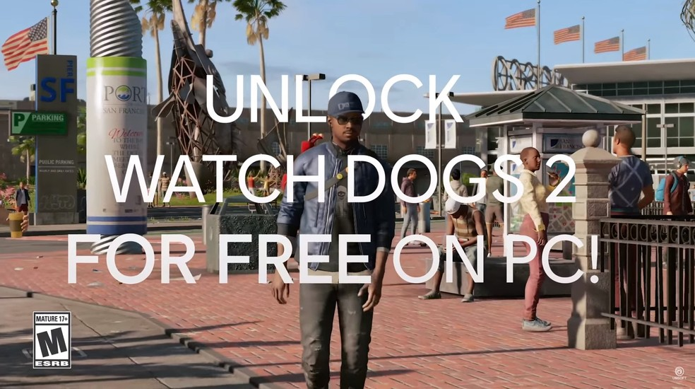

Watch Dogs 2 será liberado de graça
postado em 06 de julho de 2020

Watch Dogs 2 será oferecido de graça durante o Ubisoft Forward para todo mundo.
O evento online acontece no próximo domingo (12), a partir das 16h no horário de Brasília,
e promete apresentar diversos jogos novos da desenvolvedora. A oferta foi revelada nesta segunda-feira (6) pela Ubisoft,
que vai disponibilizar a versão do game para download no PC. Veja, a seguir, como fazer o resgate do game.
Leia mais
Ghost of Tsushima: preço, pré-venda, data de lançamento e edição especial
postado em 07 de julho de 2020
Ghost of Tsushima tem lançamento marcado para o dia 17 de julho 2020. O jogo deve ser o último grande exclusivo de PlayStation 4 (PS4)
a desembarcar no mercado antes da chegada do PlayStation 5 (PS5). Ghost of Tsushima já está em pré-venda nas principais lojas e
também na PSN pelo preço R$ 249,90. Há ainda uma edição especial, com caixa Steelbook, livro de arte e outros bônus digitais, já esgotada.
Veja, a seguir, um guia rápido do lançamento aguardado.
Leia mais